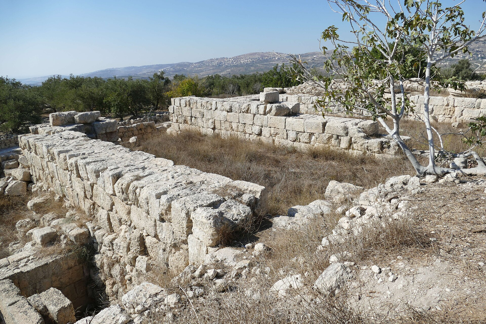
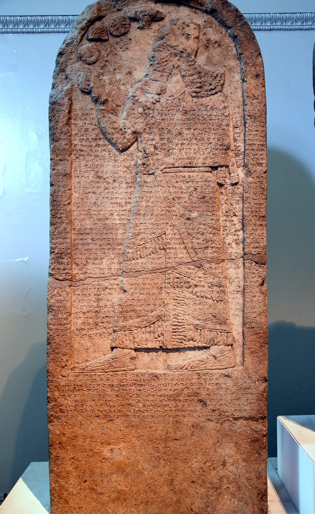
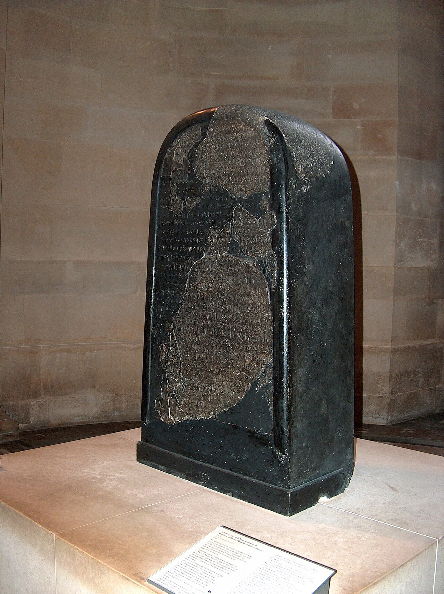
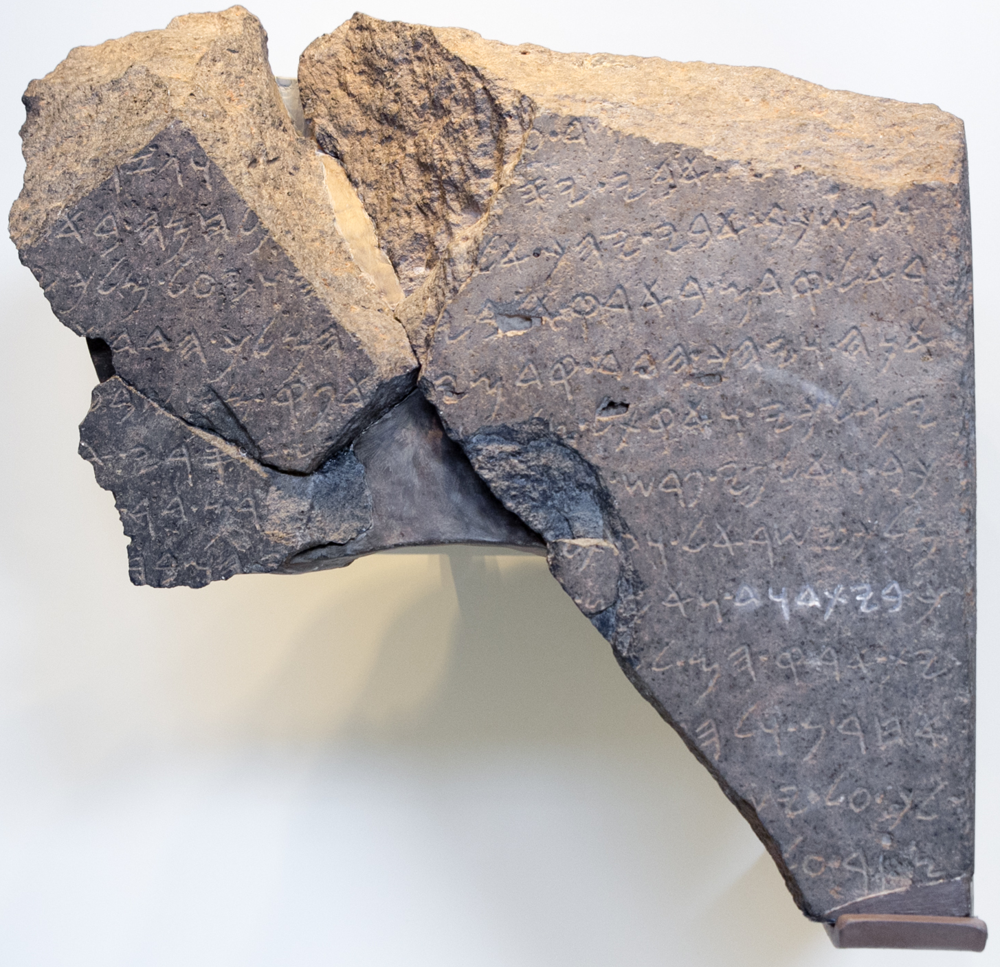
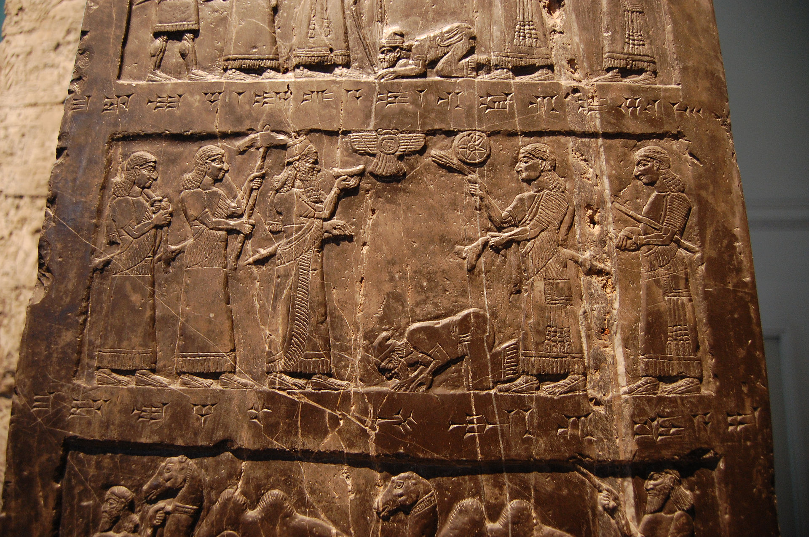

El libro de los Reyes le dedica a Omri seis versículos. Seis. Menos que a cualquier profeta secundario, menos que a varios episodios de milagros, y con un resumen que cabe en una línea: «hizo lo malo ante los ojos de YHWH». De todo su reinado el texto conserva un único dato material, casi administrativo: compró la colina de Samaría por dos talentos de plata y la fortificó.
Fuera de la Biblia, ese mismo hombre le dio nombre a un país durante más de un siglo. Los escribas asirios llamaron al reino del norte Bit-Ḫumri, «casa de Omri», en cinco textos distintos, y siguieron llamándolo así décadas después de que su dinastía hubiera sido exterminada. Cuando Salmanasar III registra el tributo de Jehú —el usurpador que había asesinado al último omrida y aniquilado a toda su familia—, lo llama, sin ninguna ironía, «Jehú de la casa de Omri». Para las cancillerías de Nínive, el nombre del fundador se había fosilizado en el nombre del territorio.
Esa desproporción es el asunto de esta entrega. No es una curiosidad estadística: es la clave para entender qué clase de libro es el libro de los Reyes.
Una capital construida de cero
Samaría es el único caso, en toda la historia de los dos reinos, de una capital fundada desde el suelo virgen por decisión política. Y la arqueología confirma la escala de la operación con una precisión desacostumbrada. El palacio se levantó sobre una plataforma artificial delimitada por un escarpe tallado en la roca de unos cuatro metros de altura, con sillares de factura excelente, muchos de ellos con marcas de cantero. Bajo la plataforma se excavaron, al mismo tiempo que se construía, dos tumbas rupestres monumentales.
Pero lo que más dice sobre el reino no es el palacio. Antes que el palacio, en la roca de la colina, hay prensas y cubetas de aceite y de vino, y alrededor de un centenar de cisternas piriformes con una capacidad estimada en unos trescientos cincuenta mil litros. Omri no eligió una colina bonita: eligió el centro de una economía especializada en dos productos de exportación. La capital del reino del norte es, en su planta misma, una empresa agrícola de alto valor.


Lo que no está resuelto es si aquella colina estaba realmente vacía. Kenyon sostuvo que Omri construyó sobre suelo virgen, y fechó la construcción por la cerámica hallada bajo los cimientos. G. E. Wright replicó que los rellenos pueden contener material mucho más antiguo, y que esa cerámica es del siglo X: indicio, por tanto, de un asentamiento previo demolido. La discusión sigue abierta, y probablemente seguirá: Samaría está bajo administración palestina y no se excava con métodos modernos. No existe ni una sola fecha de radiocarbono publicada para los períodos constructivos de Samaría.
El año en que Israel entra en la historia documentada
En 853 a.C., en Qarqar, en el norte de Siria, una coalición de reyes levantinos le hace frente a Salmanasar III. El rey asirio deja constancia de sus adversarios en el Monolito de Kurkh, y entre ellos figura «Ajab de Israel». La cifra que le atribuye es la que llama la atención: dos mil carros y diez mil soldados, el mayor contingente de carros de toda la coalición, por delante de Damasco y de Hamat.
Conviene no cerrar el párrafo ahí. La cifra de carros se discute como posible inflación escribal —los anales asirios no son censos—, y la batalla misma la reclama Salmanasar como victoria sin que la geografía posterior lo respalde. Pero el dato que no se discute es la comparación: en el mapa político de mediados del siglo IX, el reino del norte era la potencia militar del Levante meridional, y Judá no aparece.

Tres piedras y lo que cada una permite decir
De la dinastía omrida hablan tres inscripciones, y las tres se citan a menudo con más aplomo del que soportan.
La estela de Mesa, basalto moabita hallado en Dibán en 1868 y hoy en el Louvre, es la más elocuente. Mesa, rey de Moab, celebra a su dios Kemos y denuncia la opresión de su pueblo por «Omri, rey de Israel, y su hijo». Ahí está el nombre, en una fuente contemporánea y hostil. Contiene además, en la línea 18, la primera mención epigráfica del nombre YHWH en un texto de este tipo. Lo que la estela no permite es lo que más se le pide: la lectura de la línea 31 como «la casa de David» sigue siendo hipotética. Lemaire la propuso en 1994; Finkelstein, Na'aman y Römer la rechazaron en 2019 y propusieron leer ahí «Balak»; Langlois, con nuevas técnicas de imagen, la considera la lectura más probable pero no demostrada; y una réplica de 2023 observó que el trazo divisorio decisivo está en el yeso de restauración, no en la piedra. Para la dinastía davídica sirve la estela de Tel Dan, no esta.


El Obelisco Negro de Salmanasar III, de Nimrud, hacia 825 a.C., registra el tributo de «Jehú de la casa de Omri»: plata, oro, un cuenco de oro, un vaso de oro de fondo puntiagudo, copas, cubos, estaño, un cetro real y lanzas. Y contiene la representación pictórica más antigua conocida de un israelita, la figura postrada ante el rey asirio. Con dos cautelas: esa figura es probablemente un emisario y no el rey en persona, y la identificación de Iaua con el Jehú bíblico, aunque mayoritaria y sólida, ha tenido objeciones —Jehú no era omrida, y algunos propusieron leer ahí a Joram.

La tercera es la estela de Adad-nirari III hallada en Tell al-Rimah, hacia 796 a.C., que menciona a «Joás el samaritano». Es la primera vez que una fuente cuneiforme llama al reino por el nombre de su capital y no por el de su fundador. Un cambio de denominación que la Biblia no registra y que dice bastante sobre cómo veían aquel estado desde fuera.
El expediente: cuando un siglo de monumentos cambia de dueño
Y aquí llega la parte incómoda, la que hace de este período el más disputado de la disciplina. Durante décadas, un conjunto entero de monumentos del norte —puertas, palacios, establos, sistemas hidráulicos— se atribuyó a Salomón, sobre la base de un versículo: 1 Reyes 9:15, que enumera Jerusalén, Jasor, Meguido y Guézer entre las obras del rey. En 1958, Yigael Yadin encontró en Jasor una puerta de seis cámaras, volvió sobre los planos de Meguido y de Guézer, reconoció el mismo patrón y postuló un cuerpo real de ingenieros salomónico.
Hoy casi nada de aquel lote sigue donde estaba. Pero no todo se ha movido en la misma dirección, y ese es el detalle que la divulgación suele perder. Vale la pena verlo monumento por monumento.